Hi All,
Welcome back to another guest blog. I am so pleased to be joined by Jade this week to talk to us about her Iron Viz journey over the past few years. Jade's Iron Viz entry was one of my favorites this year and so it's a real honour to be able to dive into some of the details with her today. The 2024 feeder was the theme of love, so what better topic to talk about than Jade's personal story of finding love.
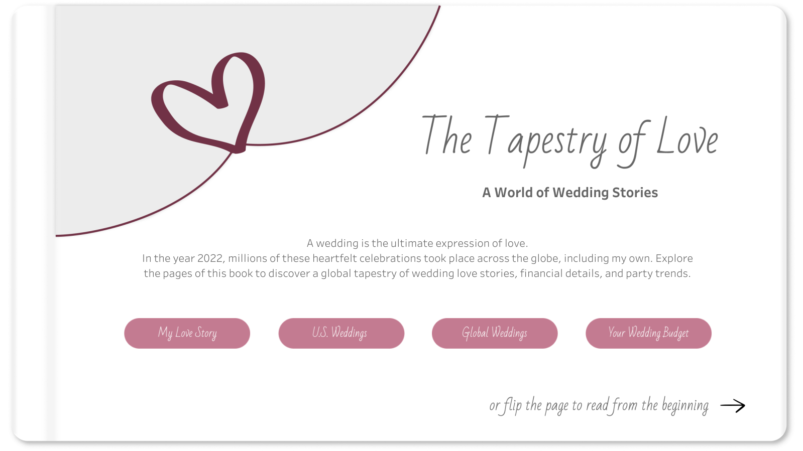
CJ: Jade, thanks for joining. For those that are unaware, May you tell us a little about how you ended up in the world of data? When did the passion for Tableau ignite, was it when you joined Analytic Vizion or earlier?
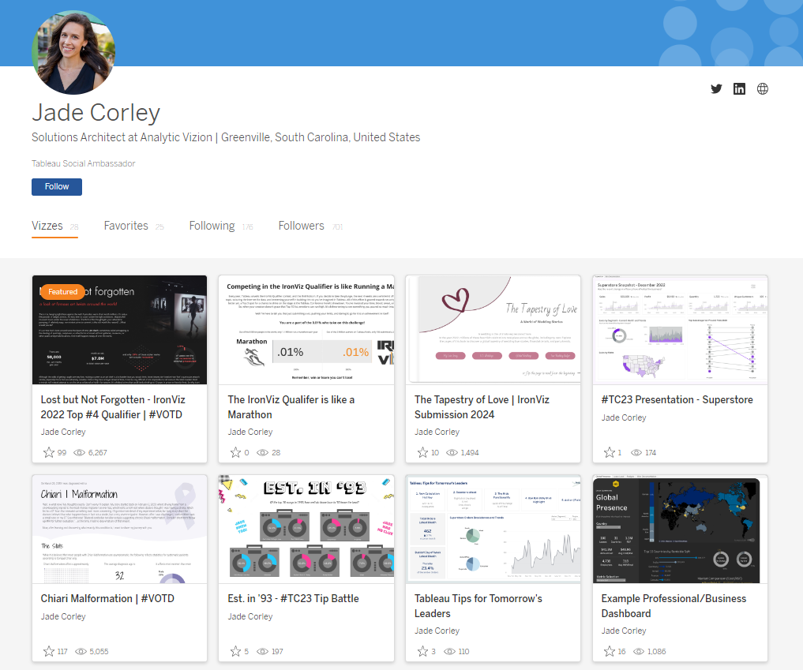
J:Hi CJ, it’s so cool being a part of this! Thanks for having me on your blog. My journey with data began in 2017 during an internship I had in grad school. I was working alongside and learning from former Tableau Visionary Matt Chambers. He saw an infographic I made, said I had an eye for design, and introduced me to Tableau. I was instantly hooked. To this day I still enjoy data visualization because I believe it’s the perfect balance of creativity and analytical problem solving. It bridges together two different ways of thinking to tell a story that will hopefully positively impact someone else. After grad school, I worked for a few years at Clemson University, and today I’m a Solutions Architect and consultant with Analytic Vizion. It’s been a fun journey full of learning and growth. CJ: You’ve entered Iron Viz last time, earning spots in Top 10 and most recently built one of my favorite visuals this year. What is it about IronViz that makes you want to enter?
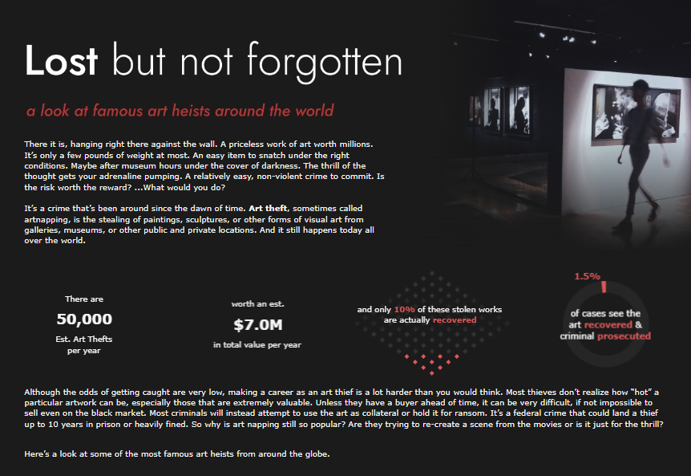
J: Thank you that means a lot CJ! I’ll start by saying that while using Tableau for 7 years now, I’ve only entered IronViz twice.
My first entry was: Lost but not forgotten
My second entry was: The Tapestry of LoveThat’s because it truly is an intimidating, time consuming, pour your heart into it, challenge. So for me, I have to really be inspired by the topic. I find that I get more inspired when I talk about the challenge with others, even if they have no idea what Tableau is. For example, for the Art themed IronViz Qualifier, I wouldn’t consider myself an artist, but I was inspired by conversations with my husband after we watched a documentary about stolen art. I found some supporting data and the story unveiled in my mind from there. The #datafam coming together for the IronViz challenge is also an encouraging and fun season to be a part of. Not going to lie, the prize money is also a nice incentive. Each time I’ve entered, I’ve truly wanted to make it on that stage; to push myself and just go for it!
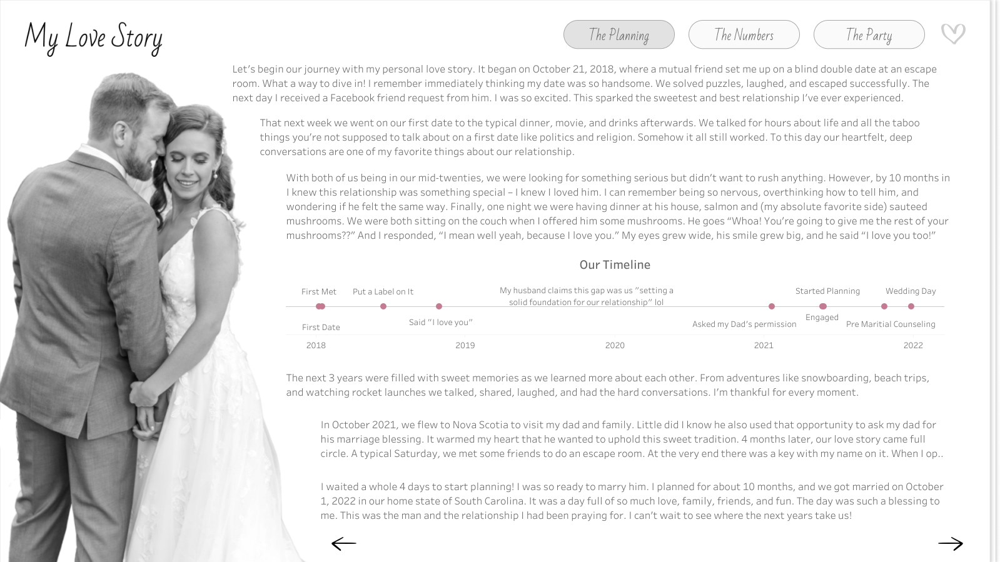
CJ: With the topic of love, you landed on such a sentimental topic. What made this topic so special for you?
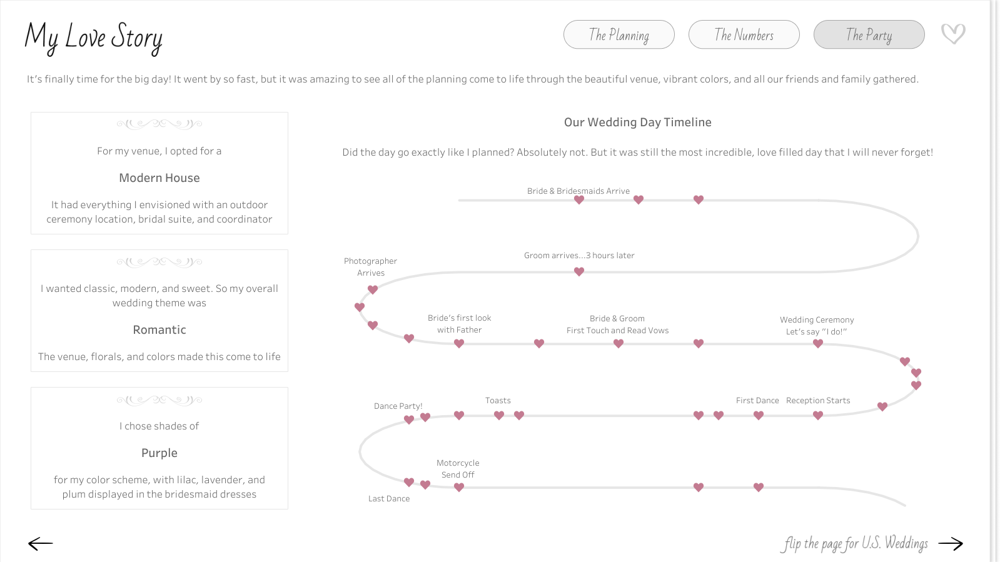
J: Love was in the air! I had recently had my own wedding back in October 2022 and had been wanting to visualize some of the wedding data I collected through the wedding planning process. The topic of love was the perfect reason for me to set aside time to build a viz that had already been on my mind. My wedding day was such a beautiful day and a blessing. It was more than the planning and the data. It was a day full of love, family, and friends. I wanted to express and relive some of that through my IronViz visualization. CJ: From a design perspective, I loved the consistency in button style and heart icons, light color palette, and framing of each visual with the “table cards”, charts and labels. They really help elevate the visual and reduce clutter between text and chart. Were there any stand out design decisions you think played well into your entry?J: From the beginning, I strived to use data viz and dashboarding best practices. I’ve learned a lot through building dashboards in consulting and what is helpful to end users. However, I still wanted the design to be beautiful. It was a balance I tried to achieve through consistency, a minimalist design, and clear visuals.
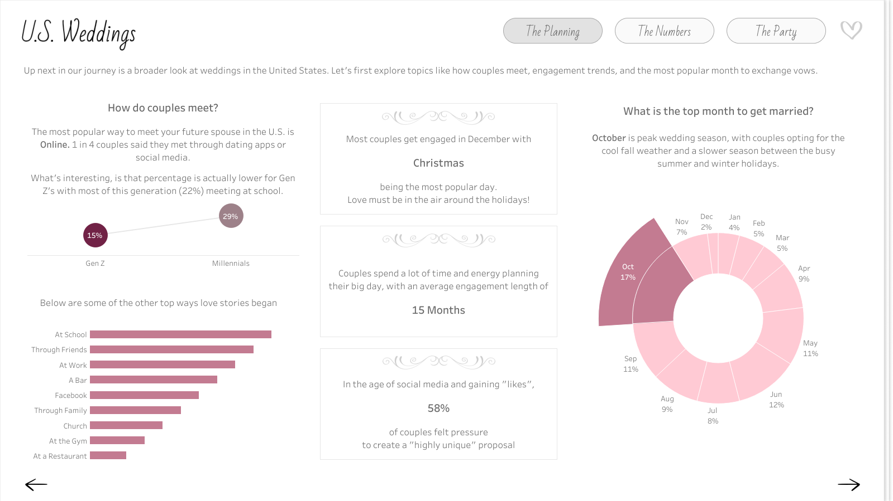
Consistency -
Same flow of topics at each level. Going from micro to macro (my wedding, U.S. Weddings, to Global Weddings) I kept the story flow the same so viewers could follow along and not get bogged down with too much information. Each level hit The Planning (how couples met & engagement), The Numbers (the costs), and The Party (the wedding day theme, reception, and vendors).
Titles, subtitles, buttons, and KPIs are in the same exact place with a consistent design on every page so end users become familiar with reading and navigation
Minimalist Design -
Color - I wanted to use color wisely, choosing a love inspired mauve pink as the pop of color against the white and grays to draw the viewer’s eye.
White space - I added lots of padding in Tableau to create balance of text and whitespace
Accessible text - while it’s more popular to use a smaller text, I opted for size 12 font along with size 14 font in the tooltips to be more accessible and available to the broader community and #datafam.
Clear Visuals - while I wanted to have a few sophisticated charts (like the sankey), most of my charts were basic (bars, lines, maps). I’ve learned that there’s a reason basic is so popular! They are intuitive, simple, tell the story, and can still be beautiful.
CJ: In the herdata video you mention the wedding guest book style to your design. I personally love that it segments the story into chapters as well as choosing a select few appropriate charts for each “page”. Can you talk to us a little more around the wireframing you did in Miro?J: I love when I can design my data viz in a way that is symbolic of the topic I’m sharing. I did this a few years ago with my gardening viz; I wanted the dumbbell charts to look like rows of plants growing out of the dirt on the dark brown background. So I tried to do this again with my IronViz submission, through making it look like an interactive wedding guest book.
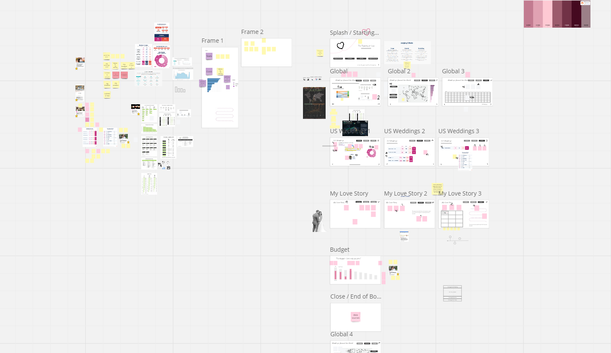
Using a whiteboarding tool like Miro really helped me with this. I’ll try to keep it short because similar to Tableau, I could talk about the benefits of Miro all day long lol. It gave me a space to:
Save links, images, and data from my research
Highlight and narrow down the data and topics I wanted to focus on for my viz
Test out a vertical vs horizontal design flow
Test color palettes and fonts
Create the story flow and wireframes with example visuals for every single page
Keep up with next steps to do (or change) in Tableau Desktop
Here’s an example of the “Global Weddings - The Numbers” tab wireframe. I used Miro to make a plan and low fidelity wireframe to help guide what the actual dashboard would look like and function.
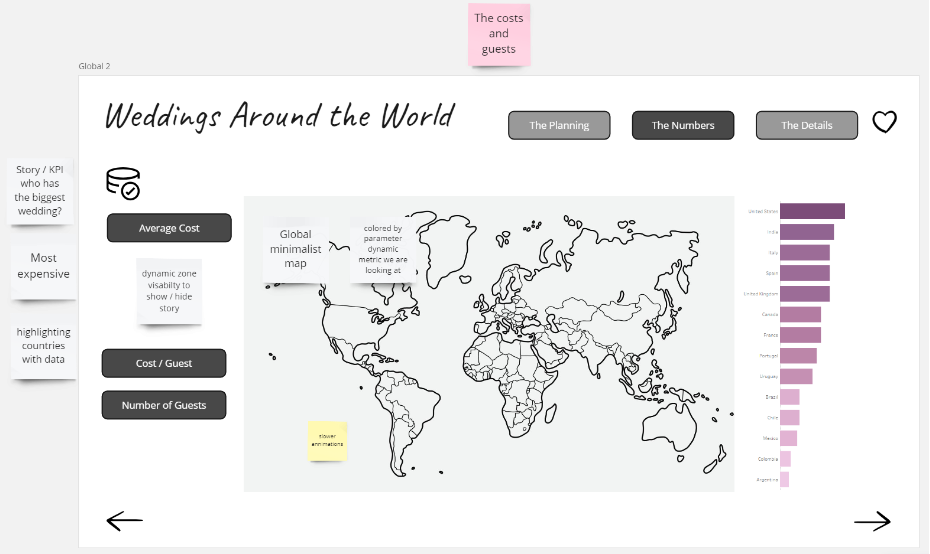
CJ: From an analytical perspective I really enjoy the ability to highlight the weddings around the world page as well as to drill down supportive information on the side. How do you go about designing a specific page and the balance between what is vital information to highlight, compared to complimentary information that may be useful to a user.J: This is just a balance I’ve learned over the years. I remember the first Makeover Monday I did, I tried to get all of the data into one viz, not focusing on highlighting the story or what I wanted my end users to take away from it. Now I know that just because I have all of the data doesn’t mean I need to viz it all. For this IronViz submission I started by exploring the data myself. Drag and dropping it into Tableau, analyzing it, asking my own questions of it. And then when I found the bright spots, I designed to best tell that story - with visuals and supporting text to help guide the users.
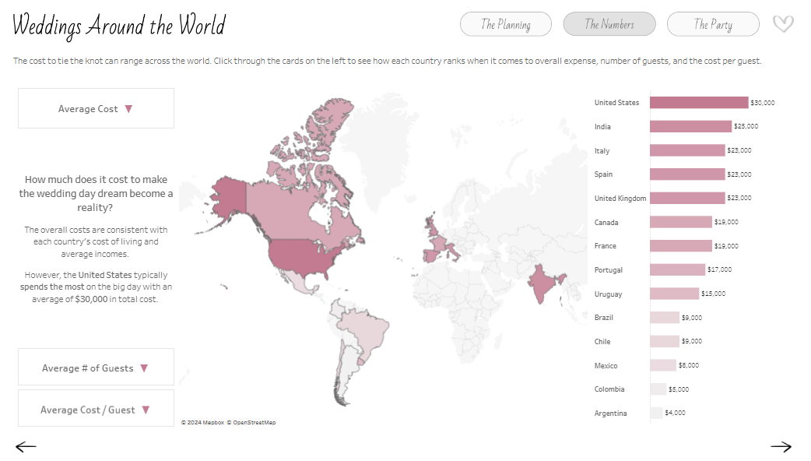
CJ: From a storytelling perspective you chose to go through your personal story, and then open it up to US and global analytics before reflecting on the budget. What determined this navigation of the story? How did you find balancing the emotional story of your wedding with the financial context behind weddings?J: I actually originally designed it to go from macro to micro, thinking starting from a global lens would be more engaging and create a better splash experience. However, after showing it to some of my colleagues for feedback, they suggested that I start with my own story. The theme was love and that’s such a personal topic. Why not start with why my topic was so important to me? So I swapped it to go from micro to macro instead. I also wanted an element where viewers could personally interact with the dashboard. After sharing my viz with a friend, she suggested creating a page where you could see costs based on your own wedding budget, and thus the “Budget: Let’s help you Plan!” page was born. This is why I believe feedback from people you trust is so important. CJ: The budget planning page is a wonderful way to add interactivity and user curiosity to the visual to really drive the users own personal budget. What were some of the complexities behind the ability to remove and add vendor finances into the page?
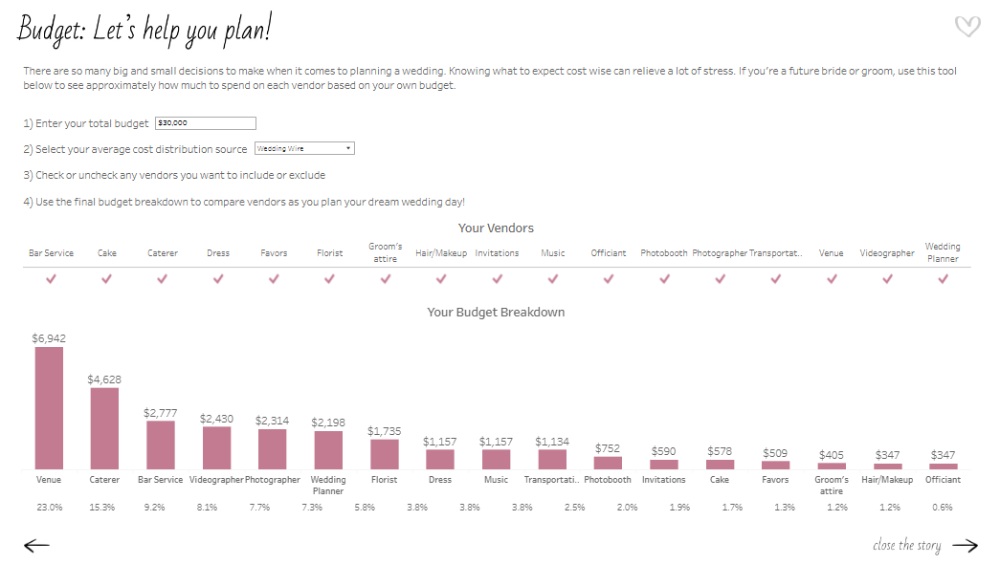
J: This view was fun to make! For the viz, I imagined having an interactive list where a bride or groom could check off which vendors they do or don’t want to hire for their wedding, and therefore adjust the budget breakdown. I could have done this with a typical field dropdown filter, but I wanted it to look prettier than that. Getting that checklist is easier said than done because you can’t apply both the “Add” and “Remove” value from Set action to the same sheet. Other people in the Tableau community have found ways around it, but the examples I saw require at least 2 clicks or multiple Sets (Add and Remove Options in the tooltip menu, Add and Remove Buttons, Using multiple sets) I found a Tableau hack way to make it happen with containers, one Set, two Set Actions, and hidden sheets. I hope to write a more thorough How-To blog on this one day soon! CJ: Whilst technical expertise isn’t sadly within the remit of the IronViz, I love that you have included some great advanced features within your visual, around dynamic zone visibility and some non standard “out of the box” chart types. Do you use IronViz to showcase some technical flair or were they a conscious decision for the flexibility in analysis and navigation?J: I like to use IronViz as an outlet for the culmination of all of the things I’ve learned about Tableau throughout the year. The qualifier is a big challenge so I like to use it to practice Jordan Peterson’s idea of having one foot in comfort and the other foot in chaos. To me, IronViz is a balance of getting into flow state, practicing what I know/do well like design, those basic/intuitive visuals, and story flow; but also introducing chaos, like integrating new Tableau features or creating visuals that I don’t get to do often for business dashboards (like my wedding timeline and vendor bump chart). I like that bit of challenge; it’s like solving a new puzzle. CJ: I really liked your follow up visual comparing Iron Viz to a marathon effort. A wonderful analogy of time, effort and commitment. What did you want individuals to take away most from the visual?
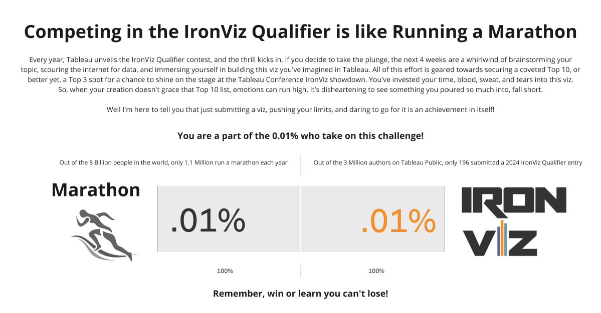
J: In 2019 when I got #4 in the Art themed Qualifier, I remember just feeling so crushed and defeated. I literally cried and even wrote a blog post about my experience Not Quite an IronViz Finalist. I’ve learned now that defeat and disappointment isn’t what I should have taken away from the experience, putting my viz out there and getting Top 10 is truly something to be proud of! But that doesn’t mean the sad and negative feelings aren’t a reality for those who participate and didn’t make the cut. So I wanted to send some data-backed, words of encouragement out into the world of IronViz. My husband and his family are big runners. They do marathons all the time. I think it’s crazy and seems way too hard. So I asked my husband why on earth he chooses to do something like that? He said it’s because of the challenge. Running a marathon is so challenging that only .01% of the world takes it on! He wants to be a part of that .01%. After another year of competing in the IronViz Qualifier, and this time not even getting in Top 10, the data nerd in me wanted to do the math… am I also in that .01%? Yes! Out of the 3 million authors on Tableau Public, only 196 submitted a 2024 IronViz Qualifier entry. If you are one of those 196, you are the .01%! Be proud and encouraged by that! CJ: Are you happy to share your feedback? What did you think of it and is there anything on reflection you would change about your visual?J: Yes I’m happy to share my feedback. At first, reading it was hard. It was easy to only focus on the negative, but there were some positives in there too. Now I know of some things that are judged that weren’t as obvious from the criteria. For example, I got points off because “some unused fields were not hidden.” Based on the feedback, I also think I tried to cram too much into the viz, with the global, U.S., and my story. Next time, I’ll narrow my scope a bit. I really thought my viz would go farther in the Qualifier, I gave it my all. However, I can’t imagine how hard judging this competition is. I know it’s all volunteer based so I’m thankful for the people who give up their time for that. Overall I wouldn’t change my topic or story. Feedback is hard, but there’s always growth in challenge! CJ: What are you looking forward to most in the community this year?J: Honestly I’m looking so forward to Tableau Conference! It’s nice to chat here and there and see people on X and LinkedIn, but it’s just so much better hanging out with everyone in person! CJ Round-up:
Grateful for Jade making time to be able to share with us the highs and lows of Iron Viz, the growth moments, and of course, her passion, both in creating such a stunning visual but also her love for Tableau. Honestly, this visual from Jade is one of my favourites, it takes real attention to detail to get padding, alignment, white space and color so perfectly balanced.
Well done to all those who entered, cherish the feeling of being part of the .01%.
LOGGING OFF,CJ